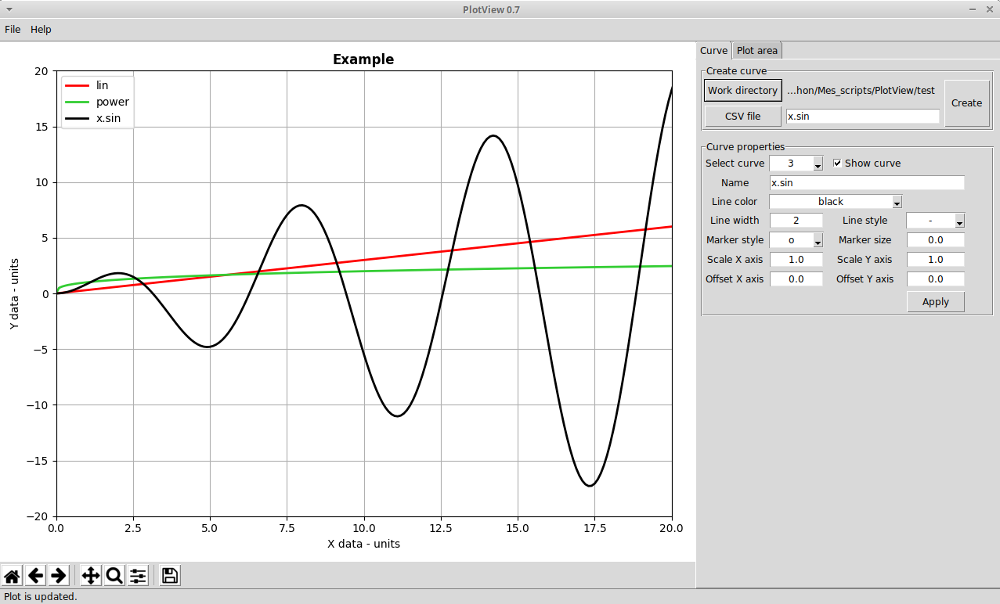

These HTML help files are located in the help directory, both in the local copy and in the Github repository.
Welcome to PlotView help!
Installation pre-requisites
Python packages
In order to use PlotView, you need to have installed Python3 installed along with the following packages:
- pandas 1.0.1
- matplotlib 3.2.0
- tkinter 8.6
Please refer to Python3 documentation to install Python3 and the modules on your system.
Operating Systems
PlotView was used on linux Ubuntu and Windows 10. It should also work on MacOS although I did not test it.
It should work on other systems provided Python and necessary packages were installed.
GUI: Graphical User Interface
The GUI was designed to be:
- simple to code!
- simple to use
- flow oriented: the order of widgets follows the order of operations

Main window
The main window is divided in 2 parts:
- plot area on the left: it is a matplotlib plot area embedded in the main window. The lower part is a matplotlib toolbar with panning, zooming and picture export fonctions.
- function area on the right: it is divided in tab panels which gather function link to 3 groups of function: curve creation, plot information and annotations.
Curve tab
The working directory allows to process several files without losing time navigating in folders.
Next to the CSV file button, the entry field allow to give a name to the curve before it is created. If you skip this entry field, the default name "Curve_label" will be given to the curve.
For all created curves, the properties can be modified by first selecting the curve ID and then modifying the properties. It is necessary to apply these changes before selecting another curve !.
At the bottom, you can offset and scale the X and Y data of the selected curve. Note that you can revert back these changes by resetting offset values to 0 and resetting scale values to 1.
Apply will update the plot with all the changes made for the selected curve. For example, if you want to change the color of all curves, you have to select each curve, change the color and apply the change before selecting another curve and so on.
Plot area tab
The titles of plot, X label and Y label are defined by default and shown on the plot. Of course, they can be changed.
The plot ranges for X and Y axis are automatically computed by matplotlib by default with the Autoscale selected. You can change these values by selecting User defined and input more appropriate values.
Apply all allows to take into accound all the modifications done in the Plot area tab to update the plot.
Status bar
At the bottom of the main window, a status bar shows message on performed operation, warnings, etc.
It is recommended to look at the status bar after each function to check the status of PlotView.